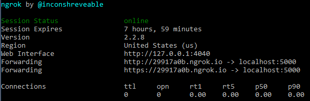

CS499 Spring 2018 - Neural Nets for Games Project
Developing Card Recognition Model
- Environments developed in
- Linux, Mac OSX, Google Cloud’s UNIX shell
- http://www.bricelam.net/ImageResizer/: a tool for resizing images on Windows machines so that the images are not too large such as a 4000x3000 resolution image
- https://github.com/tzutalin/labelImg: a useful annotation tool for labeling where cards are in images
- https://www.tensorflow.org/programmers_guide/summaries_and_tensorboard: Tensorboard is a useful tool for viewing training and evaluation progress during a training job. Instructions for use are included in the tutorial linked below.
- https://github.com/tensorflow/models/blob/master/research/object_detection/g3doc/running_pets.md: the primary tutorial which we used as a reference for how to develop a card recognition model. Start with this tutorial as this will give a really good introduction to the tools and necessary configurations needed to train models in Tensorflow. The card dataset we created can be used in almost exactly the same way as this tutorial just by using a few different files with the commands laid out in the tutorial. Since we used Tensorflow 1.2 instead of Tensorflow 1.4 (which is now supported in the current running_pets.md doc) it may be helpful to look at using 1.2 instead if any difficulties are encountered (particularly when it comes to running jobs on the cloud).
- https://github.com/Awallky/model_server_tree.git: A Github repository ready to be deployed after cloning to a local machine. On simply needs to provide a model (.pb file extension) in the test_ckpt/ directory to have it run correctly. One can also change the data/card_label_map.pbtxt
- A link to the directory tree / Github repository which has been used to develop the card recognition model. This is a branch of the Tensorflow models directory and its object detection api which we use for the development of our model.
- Files of interest, i.e. files developed by the team
- annotationdump.txt: contains a dump of files that the Google Cloud servers could not locate during training requests. This has been addressed by the team and most of the missing files have been fixed/added to the data set. When creating record files for the bicycle only subset of cards, this will hold a large number of invalid files but does not signify an error (it just signifies that certain images are not being used).
- Cloud_submit.txt: a file containing the commands used to submit training and evaluation requests to the Google Cloud servers. It also contains the command for creating the frozen model (has a .pb file extension). These will need to be altered to fit the exact files and checkpoints used in the setup but can be used as is when running from the existing models repository.
- In the models/scripts directory, there are two python scripts, which were developed in the early stages of the project, for renaming some segments in the annotations/label and for modifying images in the data set.
- In models/object_detection/data/, there is a file called card_label_map.pbtxt which is used as a dictionary containing all of the possible recognizable cards in the model’s data set. This was modeled after pet_label_map.pbtxt and will be used in place of pet_label_map.pbtxt when training a model on the card data instead of the pet data in the tutorial.
- In models/object_detection/samples/, there are several configuration files for specifying model training settings such as batch size, i.e. the number of samples trained on at a time. Each configuration file contains a note at the top that specifies what was altered from the original faster_rcnn_resnet101_pets.config that was used in the tutorial.
- models/object_detection/samples/configs/faster_rcnn_resnet101_cards.config contains the configuration settings used for training on the card images. This was the first configuration we used when training the cards dataset. There are now a number of different files in the same format.
- models/object_detection/samples/cloud/cloud.yml contains the configuration settings for running the training and evaluation jobs on the Google Cloud Platform.
- In models/object_detection/, the file create_card_tf_record.py is used to generate the training and evaluation record files that are necessary for training and evaluating the performance of the model as it trains. It currently selects a random subset of the dataset to use as evaluation images instead of training images. A possible improvement would be to specifically select training/test images based on some method. Use this instead of create_pet_tf_record.py when wanting to use the cards dataset.
- models/images contains all the images collected by the team for training.
- models/annotations contains all the annotations collected by the team for training.
- models/bicycle_only_images contains only the bicycle card images collected by the team for training.
- rest_tflow_v1_2.sh: a bash script used to reset the tensorflow models repository back to a version compatible with this tutorial.
- Euchre Website/: a directory containing the front end HTML and Javascript files for the web application
- aboutus.html: a page on the front end describing the group project and holding a link to the group’s project website
- howtouse.html: an HTML page describing how to use the web application
- euchre.html: a web page containing the project application
- main.js: contains a few functions providing the interactive functionality of the web application’s front end
- AppIntegration/: a directory containing the flask-based back end code
- Deploy_server.py: implements the top-level functionality of the back end flask-based server
- A text file describing the directory structure for implementing the flask-based server
- visualization_utils.py: an updated version of the file with the same name in the models/object_detection/utils/ directory. It has had an extra function added to it that is not in the original called get_image_cards
- templates/: a directory containing the HTML templates for the front end files required by the flask framework and sent back to the front end of the application
- static/: a directory containing css/, images/, js/, and webapp/ directories required for returning html pages to the front end
Flask-based Server
- Environments developed in: Mac OSX, Ubuntu 16.04
- How was it developed: Python 2.7, Python 3.6, JavaScript, HTML, CSS
- Libraries used:
- Tensorflow: Google's open source object detection machine learning framework
- Flask: An open source server side framework for useful for serving a Tensorflow model
- werkzeug: Werkzeug is a WSGI utility library for Python. More can be found here
- base64: This standard defines the Base16, Base32, and Base64 algorithms for encoding and decoding arbitrary binary strings into text strings that can be safely sent by email, used as parts of URLs, or included as part of an HTTP POST request. More can be found here.
- numpy: A powerful library for performing efficient linear algebra on matrices or lists.
- collections: This module implements specialized container data types providing alternatives to Python’s general purpose built-in containers, dict, list, set, and tuple. More can be found here.
- matplotlib: A plotting library for the Python programming language and its numerical mathematics extension NumPy. More information on this library can be found here.
- PIL: (aka pillow or Pillow) An image modification library. More information on it can be found here.
- threading: A library used for multithreading.
- Set up the directory tree as described, and from the models directory run the following commands:
- protoc object_detection/protos/*.proto --python_out=.
- export PYTHONPATH=$PYTHONPATH:`pwd`:`pwd`/slim
- Then change direct run python deploy_server.py from a terminal. You should see “Loading graph…” appear on the terminal. This means that the server is working correctly. You can then open a page to localhost:5000/aboutus to bring up the application on your local machine.
- How to set up directory tree: refer to DIRSTRUCTURE.txt under the cs499s18p20.github.io/AppIntegration/ directory.
Developing Web Application
- Environments developed in: Mac OSX, Ubuntu 16.04, Windows 10, Mozilla Firefox 59.0.2
- How to test it: Download the source code from the cs499s18p20.github.io/submitPage and cs499s18p20.github.io/Euchre Website directories. You can then run them locally from your web browser.
Hosting Server
- What tools were used: ngrok
- What modules are needed: the flask-based server
- How to set it up to be publicly available: open a terminal and change directories to where you have the ngrok application located. Make sure you can run the server on your local machine, as described above, and then type ./ngrok http 5000. You will then see something similar to this in your terminal window:

From this example, the web application’s address sits at http://29917a0b.ngrok.io/aboutus. You should now be able to host the server publicly.